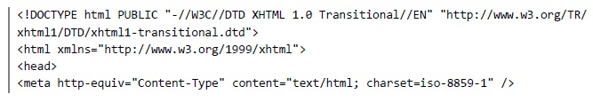
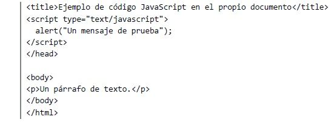
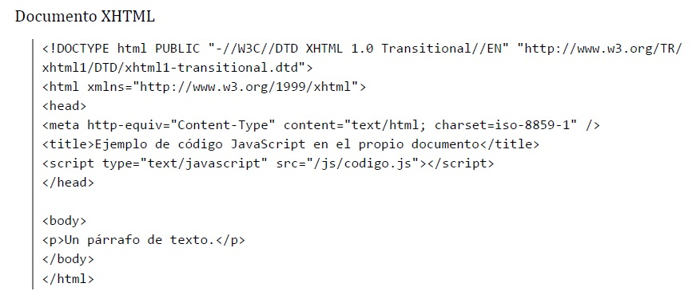
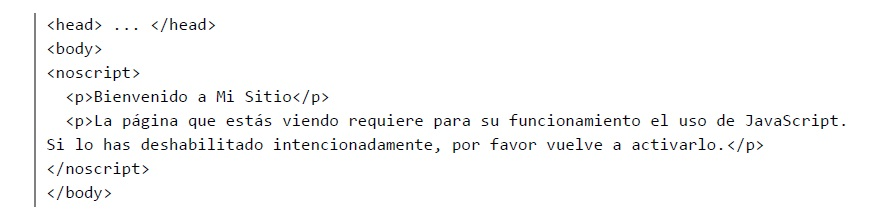
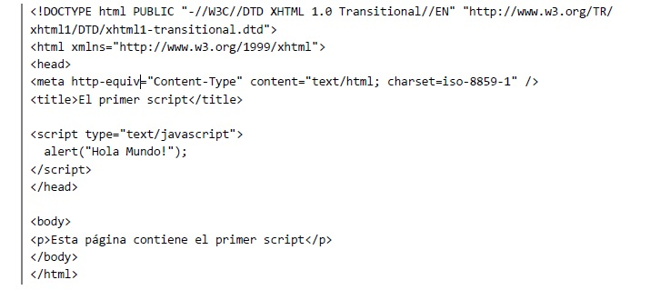
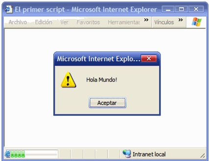
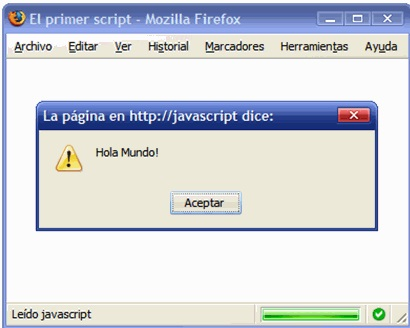
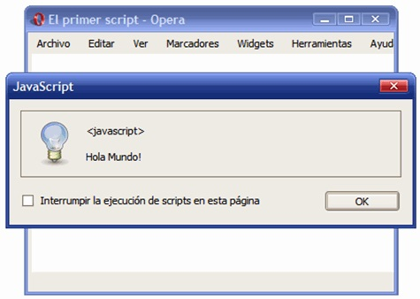

"JAVASCRIPT"
1. Introduccion
Que es JavaScript?
JavaScript es un lenguaje de programación que se utiliza principalmente para crear páginas web dinámicas.
Una página web dinámica es aquella que incorpora efectos como texto que aparece y desaparece, animaciones,
acciones que se activan al pulsar botones y ventanas con mensajes de aviso al usuario. Técnicamente,
JavaScript es un lenguaje de programación interpretado, por lo que no es necesario compilar los programas para ejecutarlos.
En otras palabras, los programas escritos con JavaScript se pueden probar directamente en cualquier navegador sin necesidad de procesos intermedios.
A pesar de su nombre, JavaScript no guarda ninguna relación directa con el lenguaje de programación Java.
Legalmente, JavaScript es una marca registrada de la empresa Sun Microsystems, como se puede ver en http://www.sun.com/suntrademarks/.

Imagen Java
2. Historia
Historia del JavaScript
A principios de los años 90, la mayoría de usuarios que se conectaban a Internet lo hacían con módems a una velocidad máxima de 28.8 kbps. En esa época, empezaban a desarrollarse las primeras aplicaciones web y por tanto, las páginas web comenzaban a incluir formularios complejos. Con unas aplicaciones web cada vez más complejas y una velocidad de navegación tan lenta, surgió la necesidad de un lenguaje de programación que se ejecutara en el navegador del usuario. De esta forma, si el usuario no rellenaba correctamente un formulario, no se le hacía esperar mucho tiempo hasta que el servidor volviera a mostrar el formulario indicando los errores existentes. Brendan Eich, un programador que trabajaba en Netscape, pensó que podría solucionar este problema adaptando otras tecnologías existentes (como ScriptEase) al navegador Netscape Navigator 2.0, que iba a lanzarse en 1995. Inicialmente, Eich denominó a su lenguaje LiveScript. Posteriormente, Netscape firmó una alianza con Sun Microsystems para el desarrollo del nuevo lenguaje de programación. Además, justo antes del lanzamiento Netscape decidió cambiar el nombre por el de JavaScript. La razón del cambio de nombre fue exclusivamente por marketing, ya que Java era la palabra de moda en el mundo informático y de Internet de la época. La primera versión de JavaScript fue un completo éxito y Netscape Navigator 3.0 ya incorporaba la siguiente versión del lenguaje, la versión 1.1. Al mismo tiempo, Microsoft lanzó JScript con su navegador Internet Explorer 3. JScript era una copia de JavaScript al que le cambiaron el nombre para evitar problemas legales.
3. Ventajas
Javascript es ejecutado en el lado del cliente. Esto significa que el código es ejecutado en los procesamientos del usuario en lugar de ser ejecutado en el
servidor web, guardando, de esta manera ancho de banda.
Javascript es un lenguaje relativamente sencillo. El lenguaje de JavaScript es relativamente fácil de usar y se compara en su sintaxis con el idioma inglés.
Utiliza el modelo DOM que provee muchas funcionalidad prescritas para objetos variados de páginas, haciendo más sencillo el desarollo de un script para el
propósito deseado.
Javascript es relativamente rápido para el usuario final. Como el código es ejecutado en la computadora del usuario, el proceso y los resultados son completados
casi instantáneamente dependiendo de la tarea (la mayoría de los procesos en Javascript son simples y no utilizan mucha memoria), por lo que evita el proceso de
ejecutar en el servidor y luego enviar al usuario final.
Funcionalidad extendida para las páginas web. Se puede desarrollar distintas funcionalidades para Javascript, que pueden ser ejecutados para aumentar la variedad
de las páginas web.
4. Desventajas
Problemas de seguridad. Las funcionalidades añadidas, una vez que son incluidas en las páginas web y ejecutadas en los servidores del cliente, pueden ser usados
para atacar el sistema del cliente. Colocando una restricción mediante estándares modernos en los navegadores, se puede ejecutar código malicioso para colocar
restricciones.
Variedad en la renderización de Javascript. Distintos procesos de Javascript pueden resultan inconsistentes en cuando a funcionalidad e interface. Mientras que
las últimas versiones de JavaScript están encaminadas a estándares universales, ciertas variaciones aún existen.
5. Requerimientos
El explorador es el responsable de correr JavaScript. De esa manera la salida de JavaScript será más responsiva en cuanto a que los datos no necesitan viajar de o
hacia el servidor. El explorador ejecuta JavaScript cuando una página web es descargada o en respuesta a un evento.
El código JavaScript puede ser colocado ya sea en el archivo HTML o en un archivo externo. Entonces, ¿cómo decidir dónde localizar el código? Sencillo, si el
código es pequeño y no será usado en otra página web, entonces se debería considerar el ponerlo en el documento HTML que se usa para ello. Por otro lado, si el
código JavaScript es largo y/o usado por varios documentos HTML, entonces se debería crear un archivo externo separado.
Debido a que se puede insertar código JavaScript dentro de un archivo HTML, este necesita ser distinguido del resto del código en la página. Para separar el
código JavaScript de los comandos HTML o el texto regular, se debe insertar este mismo dentro de . Por ejemplo:
Ejemplo Codigo Java
6. Eventos/Codigos
Cómo incluir JavaScript en documentos XHTML?
La integración de JavaScript y XHTML es muy flexible, ya que existen al menos tres formas para
incluir código JavaScript en las páginas web.
El código JavaScript se encierra entre etiquetas script y se incluye en cualquier parte del documento.
Aunque es correcto incluir cualquier bloque de código en cualquier zona de la
página, se recomienda definir el código JavaScript dentro de la cabecera del documento (dentro
de la etiqueta head):

Imagen 1 Codigo Java
Imagen 2 Codigo Java
Para que la página XHTML resultante sea válida, es necesario añadir el atributo type a la
etiqueta script. Los valores que se incluyen en el atributo type están estandarizados y para el
caso de JavaScript, el valor correcto es text/javascript.
Este método se emplea cuando se define un bloque pequeño de código o cuando se quieren
incluir instrucciones específicas en un determinado documento HTML que completen las
instrucciones y funciones que se incluyen por defecto en todos los documentos del sitio web.
El principal inconveniente es que si se quiere hacer una modificación en el bloque de código, es
necesario modificar todas las páginas que incluyen ese mismo bloque de código JavaScript.
Definir JavaScript en un archivo externo
Las instrucciones JavaScript se pueden incluir en un archivo externo de tipo JavaScript que los
documentos XHTML enlazan mediante la etiqueta script. Se pueden crear todos los archivos
JavaScript que sean necesarios y cada documento XHTML puede enlazar tantos archivos JavaScript como necesite.
Ejemplo:
Archivo codigo.js
alert("Un mensaje de prueba");

Imagen 3 Codigo Java
Además del atributo type, este método requiere definir el atributo src, que es el que indica la
URL correspondiente al archivo JavaScript que se quiere enlazar. Cada etiqueta script
solamente puede enlazar un único archivo, pero en una misma página se pueden incluir tantas
etiquetas script como sean necesarias. Los archivos de tipo JavaScript son documentos normales de texto con la extensión .js, que se
pueden crear con cualquier editor de texto como Notepad, Wordpad, EmEditor, UltraEdit, Vi, etc.
La principal ventaja de enlazar un archivo JavaScript externo es que se simplifica el código
XHTML de la página, que se puede reutilizar el mismo código JavaScript en todas las páginas del
sitio web y que cualquier modificación realizada en el archivo JavaScript se ve reflejada
inmediatamente en todas las páginas XHTML que lo enlazan.
Incluir JavaScript en los elementos XHTML
Este último método es el menos utilizado, ya que consiste en incluir trozos de JavaScript dentro
del código XHTML de la página:
Imagen 4 Codigo Java
Etiqueta noscript
Algunos navegadores no disponen de soporte completo de JavaScript, otros navegadores
permiten bloquearlo parcialmente e incluso algunos usuarios bloquean completamente el uso de
JavaScript porque creen que así navegan de forma más segura.
En estos casos, es habitual que si la página web requiere JavaScript para su correcto
funcionamiento, se incluya un mensaje de aviso al usuario indicándole que debería activar
JavaScript para disfrutar completamente de la página.
El siguiente ejemplo muestra una página web basada en JavaScript cuando se accede con JavaScript
activado y cuando se accede con JavaScript completamente desactivado.
Imagen 5 Java
Figura 1.1. Imagen de "www.Netvibes.com" con JavaScript activado
El lenguaje HTML define la etiqueta noscript para mostrar un mensaje al usuario cuando su
navegador no puede ejecutar JavaScript. El siguiente código muestra un ejemplo del uso de la
etiqueta noscript:

Imagen 6 Codigo Java
La etiqueta noscript se debe incluir en el interior de la etiqueta body (normalmente se
incluye al principio de body). El mensaje que muestra noscript puede incluir cualquier
elemento o etiqueta XHTML.
El primer script
A continuación, se muestra un primer script sencillo pero completo:

Imagen 7 codigo Java
En este ejemplo, el script se incluye como un bloque de código dentro de una página XHTML. Por
tanto, en primer lugar se debe crear una página XHTML correcta que incluya la declaración del
DOCTYPE, el atributo xmlns, las secciones head y body, la etiqueta title, etc.
Aunque el código del script se puede incluir en cualquier parte de la página, se recomienda
incluirlo en la cabecera del documento, es decir, dentro de la etiqueta head.
A continuación, el código JavaScript se debe incluir entre las etiquetas script.../script.
Además, para que la página sea válida, es necesario definir el atributo type de la etiqueta
script. Técnicamente, el atributo type se corresponde con "el tipo MIME", que es un estándar
para identificar los diferentes tipos de contenidos. El "tipo MIME" correcto para JavaScript es text/javascript.
Una vez definida la zona en la que se incluirá el script, se escriben todas las sentencias que
forman la aplicación. Este primer ejemplo es tan sencillo que solamente incluye una sentencia: alert("Hola Mundo!");.
La instrucción alert() es una de las utilidades que incluye JavaScript y permite mostrar un
mensaje en la pantalla del usuario. Si se visualiza la página web de este primer script en
cualquier navegador, automáticamente se mostrará una ventana con el mensaje "Hola Mundo!".
A continuación se muestra el resultado de ejecutar el script en diferentes navegadores:

Figura 2.1. Mensaje mostrado con "alert()" en Internet Explorer

Figura 2.2. Mensaje mostrado con "alert()" en Firefox

Figura 2.3. Mensaje mostrado con "alert()" en Opera
Como se puede observar en las imágenes anteriores, el funcionamiento de la utilidad alert() en
los distintos navegadores es idéntico. Sin embargo, existen grandes diferencias visuales en la
forma en la que se presentan los mensajes.